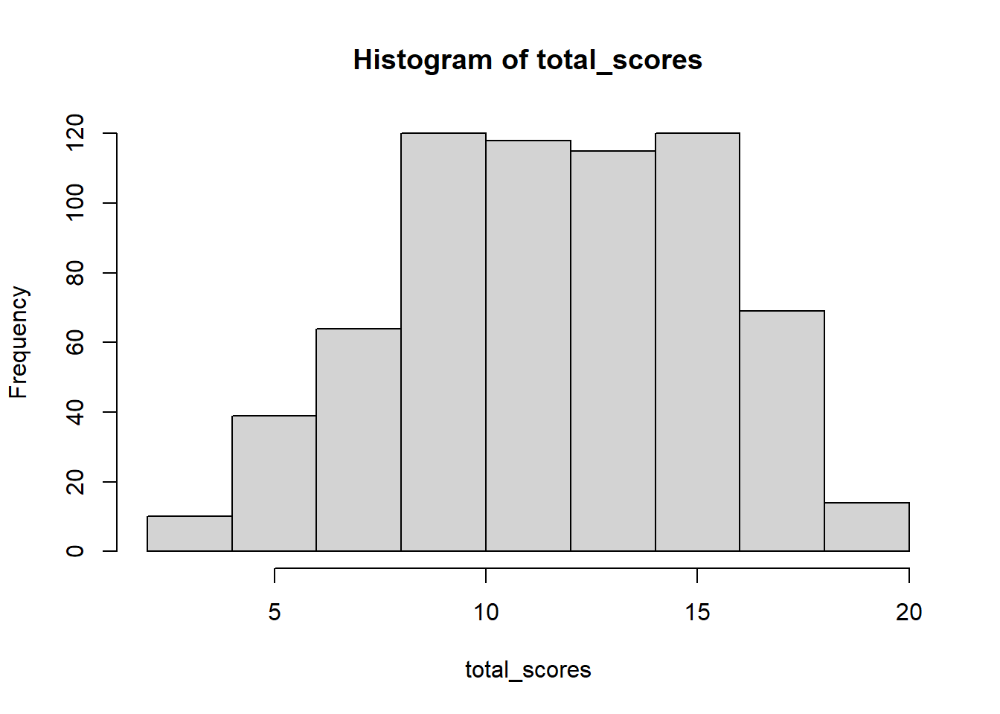

### Load the dataset and required packages
library(ShinyItemAnalysis)
library(psych)
data("HCIdata")
### Extract variables to facilitate analysis
items_unscored <- HCIdata[ , 1:20]
items_scored <- HCIdata[ ,21:40]
total_scores <- HCIdata$totalProject 1 - Foundational Analyses using Multiple-Choice Response Data from an Achievement Test
Introduction
The goal of this project is to analyze data collected from a multiple-choice achievement test. This data format is common within educational measurement, and contains one observation (row) per test-taker and one column per item, with each cell containing an unscored item response.
In this project, we will be analyzing the Homeostasis Concept Inventory (HCI) (McFarland et al., 2017), which is a 20-item multiple-choice test designed to measure undergraduate students’ understanding of the homeostasis concept. The HCI was developed through an iterative process which involved identifying common student misconceptions through think-aloud interviews and expert feedback, and developing distractors based on these misconceptions.
The dataset HCIdata is part of the {ShinyItemAnalysis} R package (Martinková & Drabinová, 2018) and contains N=669 observations which were collected as part of the validation process for the final version of the HCI (McFarland et al., 2017). Notably, the dataset contains both the scored and unscored item responses, which allows for distractor analysis, as well as matching variables such as gender and minority membership, which allows for differential item and distractor functioning (DIF and DDF) analyses.
The HCIdata dataset contains 49 variables. The first 20 variables (1-20) are the unscored item responses which are recorded as A/B/C/D. The next 20 variables (21-40) are the scored item responses which are recorded as 0/1. The next variable (41) is the total/sum score. The last 8 variables (42-49) are demographic variables including gender, plans to major in the life sciences, class level/year in college, ethnicity, minority membership, English as the student’s first language, course type, and type of school. A complete description of this dataset can be found in the documentation for the {ShinyItemAnalysis} package (Martinková & Drabinová, 2018) and additional information can also be found in the validation study for the HCI (McFarland et al., 2017).
Dataset Preparation and Preliminary Inspection
First, the dataset and the required R packages were loaded into RStudio, and variables from the dataset were extracted to facilitate analysis. The dataset contained no missing values, so no treatment of missing values is needed.
Before performing any analyses, a preliminary inspection of the total score distribution provides a useful overview of the instrument’s performance and suitability for subsequent analyses. This can be done by examining a histogram and descriptive statistics of the total scores. Some key issues to look for include: excessive skewness (which indicates a floor or ceiling effect), multimodality (which may indicate multidimensionality or distinct subgroups in the sample), and insufficient variability in scores (which can attenuate or destabilize estimates due to restriction of range; this may be indicated by a large positive kurtosis).
hist(total_scores)
describe(total_scores) vars n mean sd median trimmed mad min max range skew kurtosis se
X1 1 669 12.13 3.65 12 12.22 4.45 3 20 17 -0.17 -0.68 0.14Overall, the total score distribution looks healthy. The mean of 12.13 indicates that the average student scored roughly 60.7%, which suggests that the difficulty of the test is well-aligned with the target population. The skewness of -0.17 is very small and indicates no ceiling or floor effects. The kurtosis of -0.68 indicates that the distribution is slightly platykurtic (flatter peak/thinner tails), which is desirable for differentiating students across the middle range of the score distribution. Lastly, the histogram and the standard deviation of 3.65 suggests that there is sufficient variation in the total scores.
Classical Reliability and Item Analysis
The internal consistency reliability of the composite scores may be estimated using the coefficient alpha based on Pearson correlations (Phi coefficients). Additionally, since the items are dichotomously scored but are hypothesized to reflect an underlying normally distributed attribute, it may be helpful to estimate the ordinal alpha based on tetrachoric correlations, which represents the hypothetical reliability of the underlying attribute scores.
Both the Pearson correlation (Phi coefficient) and the tetrachoric correlation depend on the item difficulties. Both methods most accurately reflect the true linear relationship when the item difficulties are close to p = 0.5 (the mean of the underlying attribute distribution). When the item difficulties are closer to the extremes, the Phi coefficient is known to be attenuated (biased low), and the tetrachoric correlation remains unbiased but is less precise (larger standard errors).
It is useful to report both the coefficient alpha and the ordinal alpha for two reasons. The first reason is the difference in interpretation, which was briefly mentioned above. The coefficient alpha is an estimate of the reliability of the composite scores and reflects the reliability of the instrument as it is operationally scored and used. The ordinal alpha is an estimate of the reliability of the underlying attribute distribution, which reflects the theoretical reliability of measurement if the underlying attribute could be measured without information loss from being dichotomously scored. The second reason for reporting both estimates is that the difference between the estimates itself provides useful diagnostic information. If the ordinal alpha is not much higher than the coefficient alpha, then this suggests that there is little information loss from dichotomous scoring. Conversely, a substantial gap suggests that the item set includes more extreme difficulty values, and that meaningful information is loss by dichotomous scoring.
### Coefficient alpha using Pearson correlations
alpha(items_scored)[c("total", "feldt")]$total
raw_alpha std.alpha G6(smc) average_r S/N ase mean sd
0.7161644 0.7215166 0.7300311 0.1146869 2.590878 0.0158408 0.6064275 0.1825975
median_r
0.1205056
$feldt
95% confidence boundaries (Feldt)
lower alpha upper
0.68 0.72 0.75### Ordinal alpha using tetrachoric correlations
tetra <- tetrachoric(items_scored)alpha(tetra$rho)[c("total", "feldt")]$total
raw_alpha std.alpha G6(smc) average_r S/N median_r
0.8295802 0.8295802 0.8587097 0.1957491 4.867863 0.2072622
$feldt
95% confidence boundaries (Feldt)
lower alpha upper
0.7 0.83 0.92The coefficient alpha estimate is 0.72 (95% CI [.68, .75]) and the ordinal alpha estimate is 0.83 (95% CI [.70, .92]). The difference is fairly substantial and suggests that the item set contains items with extreme difficulty values, and that there is meaningful information loss from dichotomous scoring. Furthermore, the width of the confidence interval for the ordinal alpha estimate is 0.22, compared to 0.07 for the coefficient alpha estimate. This is consistent with the tetrachoric correlation being a less precise reflection of the true linear relationship when the item difficulty values are extreme, as mentioned earlier.
The internal consistency of the composite scores likely falls within the “acceptable” range according to the recommendations of Nunnally & Bernstein (1994). However, given that the instrument was designed to measure a single construct, this level of internal consistency is not particularly strong. Additionally, the recommendation by Nunnally is for early-stage research and classroom practice, and is below levels recommended for high-stakes decisions. Thus, the instrument is recommended for use in classroom settings, but should not be used as the sole basis for high-stakes decisions.
Next, the classical item difficulty, discrimination, and alpha-if-dropped are calculated and summarized in the table below. For item discrimination, both the item-total and the item-rest correlations are reported as point-biserial correlations, consistent with standard practice in classical item analysis.
CTT_results <- data.frame(
difficulty = round(colMeans(items_scored), 3),
discrimination_IT = round(ItemAnalysis(items_scored)$RIT, 3),
discrimination_IR = round(ItemAnalysis(items_scored)$RIR, 3),
alpha_drop = round(alpha(items_scored)$alpha.drop$raw_alpha, 3)
)
CTT_results difficulty discrimination_IT discrimination_IR alpha_drop
QR1 0.695 0.410 0.298 0.704
QR2 0.750 0.334 0.222 0.711
QR3 0.848 0.430 0.344 0.702
QR4 0.399 0.305 0.177 0.715
QR5 0.445 0.390 0.265 0.707
QR6 0.359 0.458 0.345 0.700
QR7 0.541 0.240 0.106 0.722
QR8 0.703 0.440 0.330 0.701
QR9 0.429 0.344 0.217 0.712
QR10 0.641 0.387 0.267 0.707
QR11 0.770 0.397 0.293 0.705
QR12 0.577 0.421 0.300 0.704
QR13 0.601 0.477 0.363 0.698
QR14 0.755 0.441 0.339 0.701
QR15 0.435 0.431 0.311 0.703
QR16 0.604 0.484 0.371 0.697
QR17 0.291 0.173 0.049 0.725
QR18 0.789 0.506 0.416 0.695
QR19 0.779 0.455 0.358 0.700
QR20 0.717 0.443 0.336 0.701Notably, item QR17 has very low discrimination (RIR = .049) as well as being a challenging item (p = .291). This indicates that item QR17 is highly problematic, since individuals who correctly answered the item were not meaningfully more likely to have a higher total score. This is consistent with item QR17 having an alpha-if-dropped of 0.725, which is higher than the overall coefficient alpha estimate. Thus, item QR17 is recommended for revision.
Additionally, item QR7 (p = .541, RIR = .106, \(\alpha_{drop}\) = .722) and item QR4 (p = .399, RIR = .177, \(\alpha_{drop}\) = .715) have low discrimination which is not attributable to floor or ceiling effects. Thus, these two items may also warrant revision.
Classical Distractor Analysis
Before performing distractor analysis, there is a minor issue with the HCIdata dataset that needs to be corrected. Item 5 (A5) should have four response options (A/B/C/D). However, looking at the dataset, two entries have been incorrectly coded as lowercase “c” rather than uppercase “C”, resulting in the variable having 5 factor levels (A/B/C/c/D). This can be easily corrected using the fct_recode() function in the {forcats} package, which is part of the tidyverse family of R packages.
library(forcats)
items_unscored$A5 <- fct_recode(items_unscored$A5, "C" = "c")Now the two factor levels have been merged. Looking at the dataset, item A5 now has 4 factor levels (A/B/C/D), which is correct. Note that not all items have 4 factor levels; the majority have either 3 or 4 factor levels, with a few items having 5 factor levels. There are no additional issues with the dataset, so we may proceed with distractor analysis.
TBD
Dimensionality Analysis
TBD